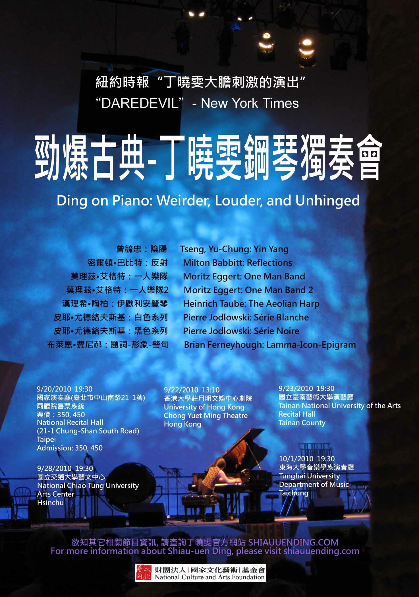

Reviews
- Excerpt from the Bang on a Can Marathon 2009 review on The New York Times
Germany had a striking entry as well, in the pianist Shiau-uen Ding's daredevil account of Moritz Eggert's
Hämmerklavier III: One Man Band,
a piece that requires a pianist to beat on almost every surface of the instrument (sometimes while playing the keyboard), as well as stamp, sing and hit bass notes with her left foot.
Articles
- Rhythmic Practice in Music for Small Ensemble and Tape in
International Computer Music Conference Proceedings, 2009, 557-560
Abstract: Rhythmic performance practice between ensemble and tape is similar to that between solo instrument and tape, but additional challenges arise from synchronizing the ensemble with the tape while keeping the ensemble together. This paper presents some of the challenges of composing and performing works for small ensemble and tape as well as some guidelines for composers, based on experiences of NeXT Ens, a touring ensemble based at the University of Cincinnati College-Conservatory of Music.
- Developing a rhythmic performance practice in music for piano and tape in Organised Sound, 2006, 11: 255-272
Interviews
- T-Classical.com interview with pianist Shiau-uen Ding, January 2012
- SEAMUS (Society for Electro-Acoustic Music in the United States) newsletter interview with pianist Shiau-uen Ding, Founding Director of NeXT Ens, 2006, 4: 6-7
Program Notes
- 2010 Taiwan and Hong Kong concerts program notes 1
- 2010 Taiwan and Hong Kong concerts program notes 2
{kind=link}
{kind=link}
